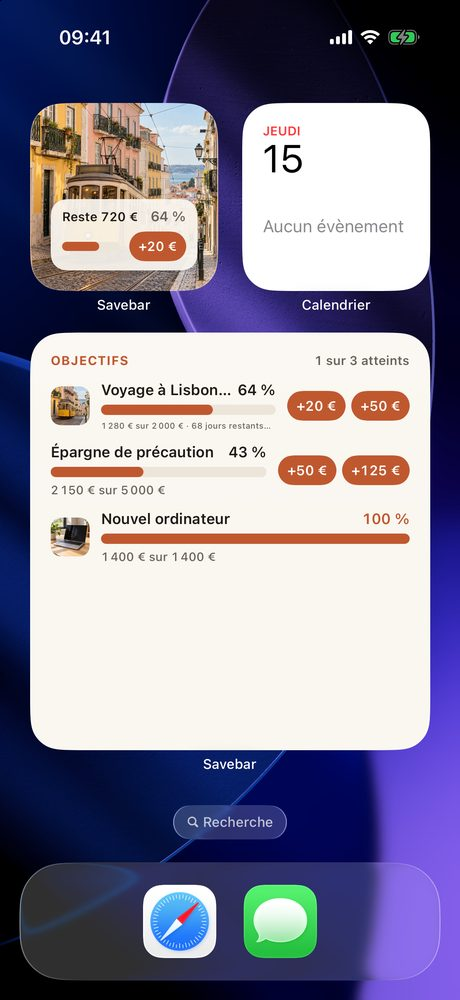
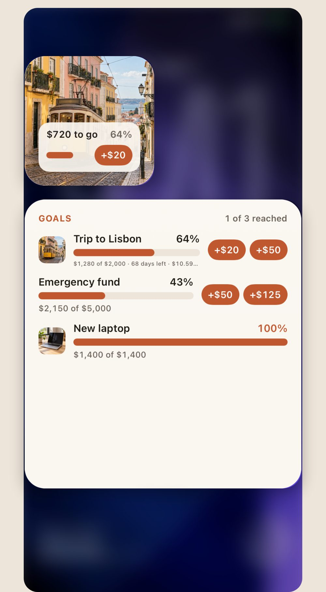
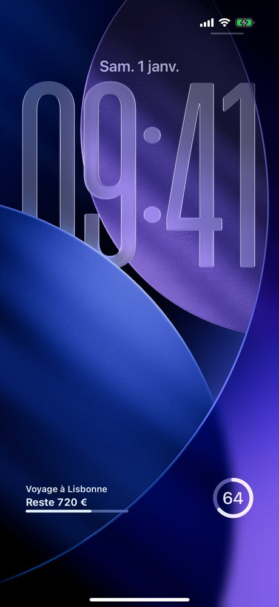
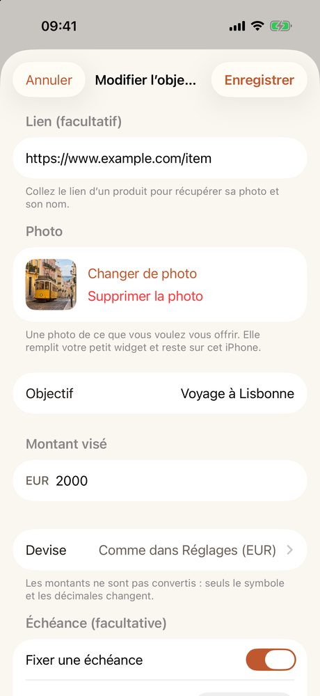
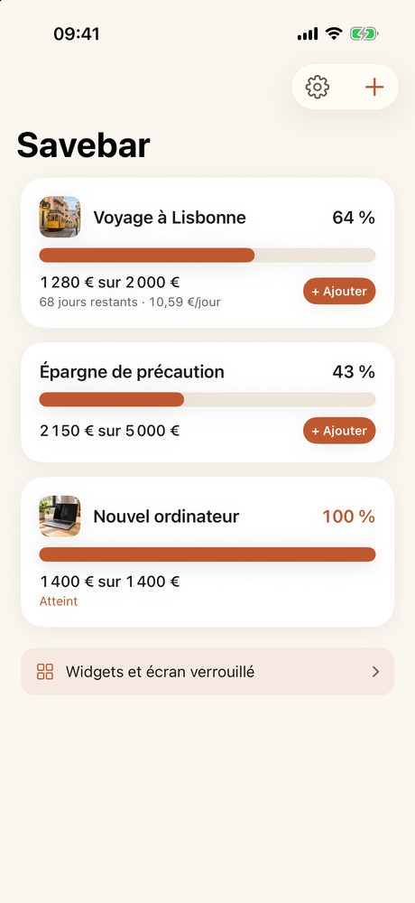

Touchez + sur le widget quand vous mettez de l’argent de côté. Fixez une date pour voir combien épargner par jour.

Mettez un peu d’argent de côté, touchez un montant comme +10 € sur le widget et regardez la barre avancer.

Votre projet d’épargne, sur votre écran d’accueil. Le petit widget est gratuit : un objectif, sa barre de progression et un bouton qui ajoute le montant choisi sans ouvrir l’app.

Voyez votre objectif se rapprocher chaque jour.Pro Widgets de l’écran verrouillé : un anneau avec votre pourcentage, ce qu’il reste à épargner et une vue sur une ligne.
Alimentez un objectif depuis votre poignet.Pro Les mêmes boutons de montant que le widget, plus des complications pour le cadran.
Ajoutez une photo de ce que vous voulez vous offrir : le petit widget l’affiche en grand. Enregistrez un article depuis une boutique dans Safari, ou avec le bouton Partager, comme objectif, avec sa photo, son nom et son prix.

Avec une date : combien de jours il reste et combien mettre de côté par jour. Chaque dépôt est conservé dans un historique que vous pouvez modifier ou supprimer.

Sans publicité. Sans compte.
Achat unique, sans abonnement.
Sans publicité, sans abonnement. Pro est un achat unique.
Toutes les apps
Sans connexion bancaire, sans compte, sans abonnement.
English · 日本語 · 简体中文 · 繁體中文 · 한국어 · Deutsch · Français · Español · Italiano · Nederlands · Polski · Português · Русский · ไทย · Türkçe · Українська · Tiếng Việt · Bahasa Indonesia